신입 게임 기획자
프로젝트 중심 포트폴리오
기획서에서 끝내지 않고, 직접 만들며 배워온 게임 기획자 공병용입니다
시스템 부팅 중
기획서에서 끝내지 않고, 직접 만들며 배워온 게임 기획자 공병용입니다
스타 유즈맵부터 유니티까지 거치며 시스템을 직접 설계하고 만들어본 경험을 통해,
기획 의도가 실제 플레이로 어떻게 전달되는지 체득해왔습니다.
의도한 경험을 시스템으로 구현하는 데 강점이 있는 신입 기획자입니다.
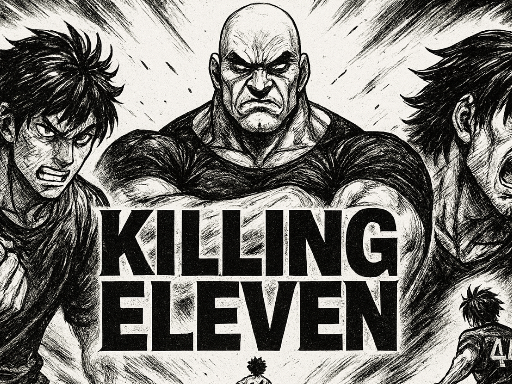
풋살 규칙 위에 정신없는 액션을 얹은
'스포츠 액션 로그라이크'
풋살 규칙과 난투 액션이 합쳐졌을 때 '속도감 있는 전략 액션'으로 성립하는지, 직접 개발해서 확인하기 위한 프로젝트입니다.
멀리서 고민하는 전략이 아닌, 경기 중 상황이 만드는 즉각적인 판단을 핵심 재미로 설계했습니다.
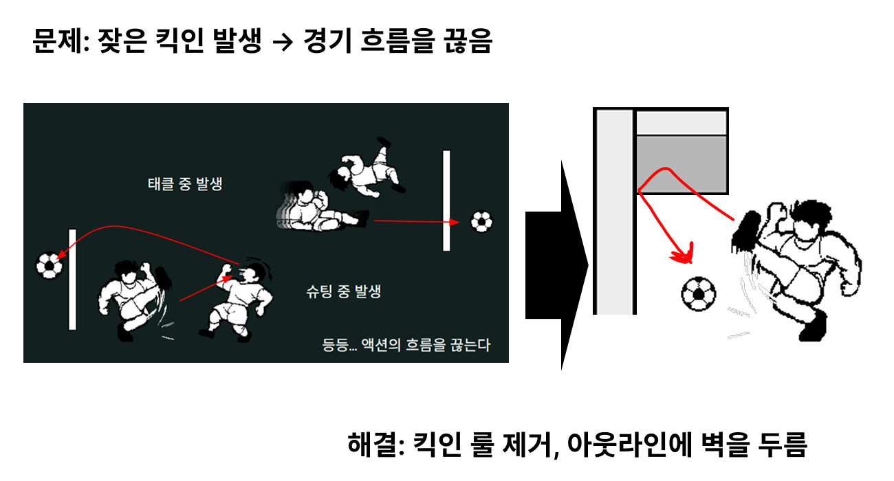
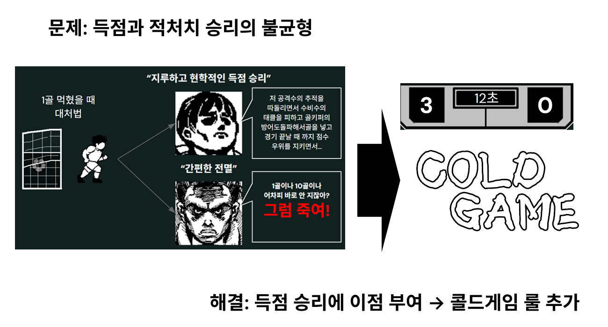
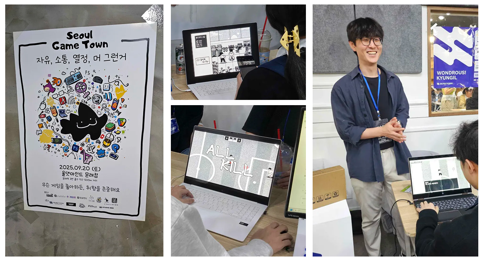
게임 아카데미의 공모전 우수작으로 선정되어 Seoul Game Town에 6시간 전시, 유저의 플레이 흐름을 직접 관찰하고 피드백을 수집했습니다.
기획 의도가 유저에게 전달되는 부분과 그렇지 않은 부분을 현장에서 구분할 수 있었습니다.
킥인 제거, 승패 밸런싱 등 개발 중 내린 기획 판단을 포스트모템으로 기록했습니다.
단순히 무엇을 고쳤는지가 아니라, 왜 그 판단을 내렸는지를 대안과 함께 정리해 이후 기획의 참고 기준으로 남겼습니다.
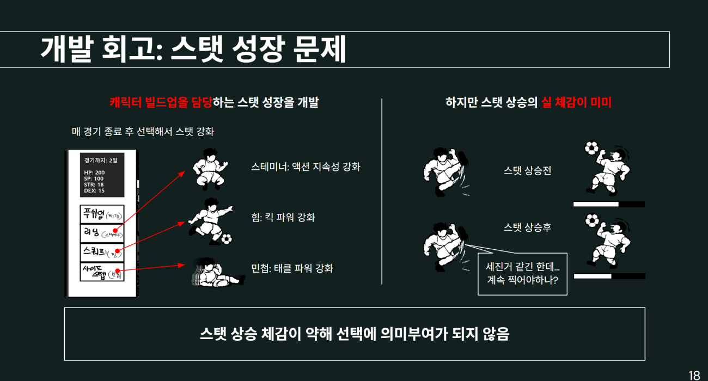
스포츠와 로그라이크와 난투 액션의 조합. 핵심 기획 의도가 실제 게임에서 어떻게 구현되었는지 확인하실 수 있습니다.
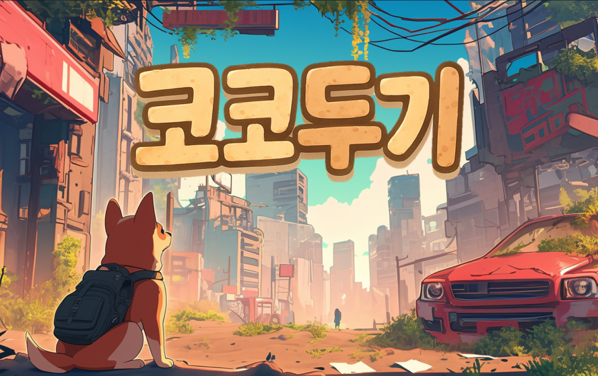
움직이며 발견하는 재미, 탐험 중심의
'모바일 3D 퍼즐 어드벤처'
'누구나 쉽게 즐기는 탐험 퍼즐'이라는 팀 목표를 달성하기 위해, 퍼즐 시스템을 설계하고 개발자가 바로 구현할 수 있는 수준으로 문서화하는 역할을 맡았습니다.
단순한 퍼즐 풀이가 아니라, 플레이어가 움직이며 발견하는 재미를 핵심 경험으로 정의하고 시스템을 설계했습니다.
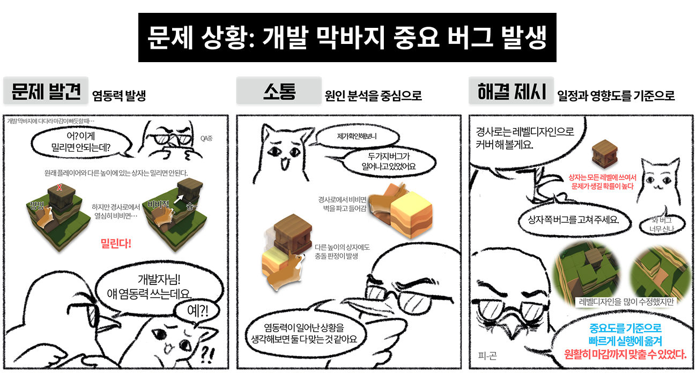
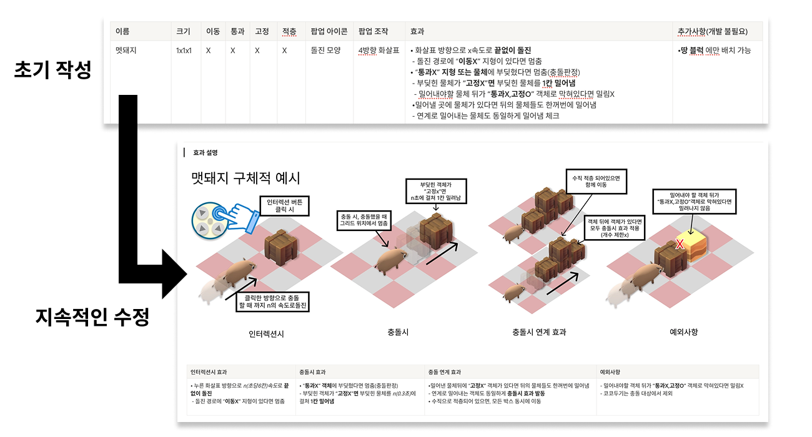
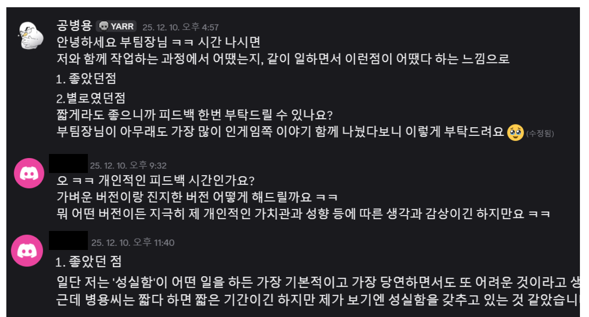
핵심 퍼즐 시스템을 기획하고, 레벨디자인을 직접 담당. 매 챕터 마다 새로운 탐험 경험을 주는걸 목표로 챕터마다 새로운 기믹과 함께 초기화되는 난이도 곡선을 기획했습니다.
각기 다른 테마를 가진 3개의 챕터/33개의 스테이지를 레벨디자인 했습니다.
효과적이었던 문서 작성 방식을 템플릿으로 정리해 다음 프로젝트의 기준으로 남겼습니다.
데이터 테이블 관리, 기획서 전달력, 기획과 실제 개발의 괴리 등 협업 중 겪은 이슈를 포스트모템으로 구조화했습니다.
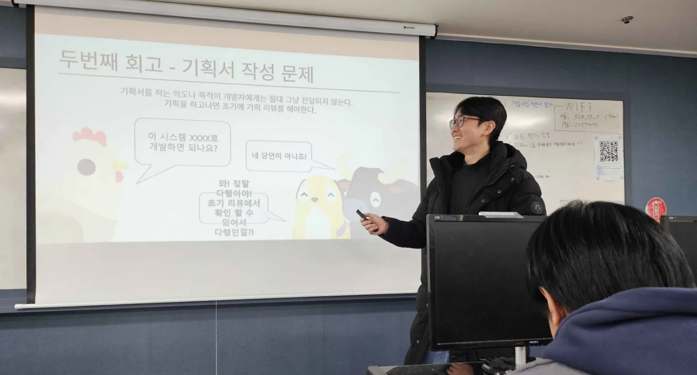
가상 조이스틱 하나로 퍼즐을 풀고 맵을 탐험하는 직관적인 플레이 흐름과, 지형·물체·동물 기믹이 레벨 안에서 어떻게 조합되는지 확인하실 수 있습니다.
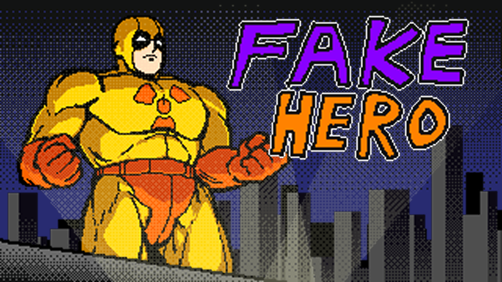
시민의 시야를 피해 도시를 혼란에 빠뜨리는
'스코어 어택 액션 게임'
해외 itch.io 게임잼에 4인 팀으로 참가했습니다. 프로젝트 리드로서 일정 조율, 기획 방향 설정, 아트 제작을 병행하며 기한 내에 게임을 완성하는 것을 목표로 삼았습니다.
시민을 구하면 점수 루프가 정체되고 점수를 올리면 패배에 가까워지는 구조를 설계, 위기관리의 재미를 유도하고자 했습니다.
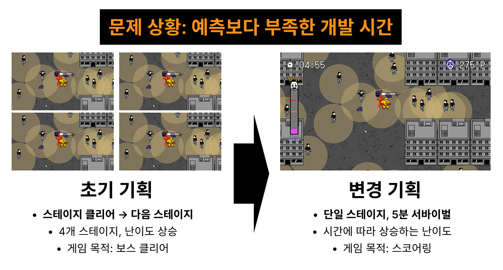
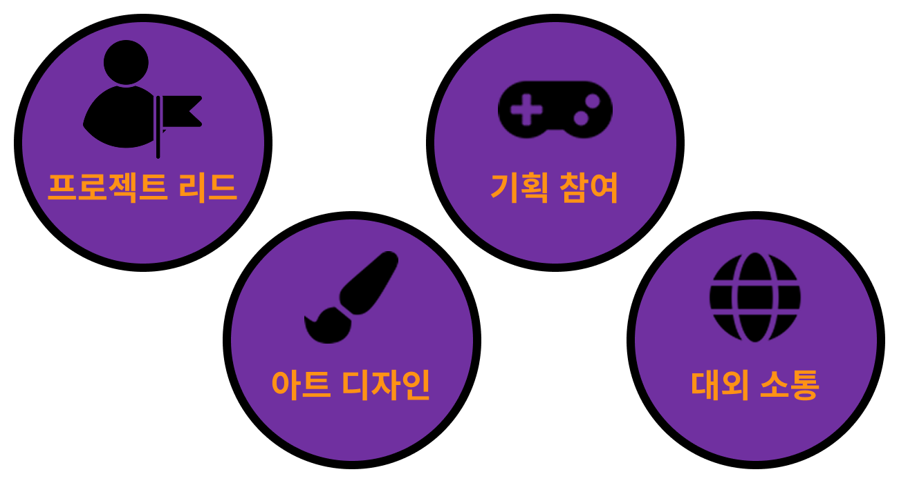
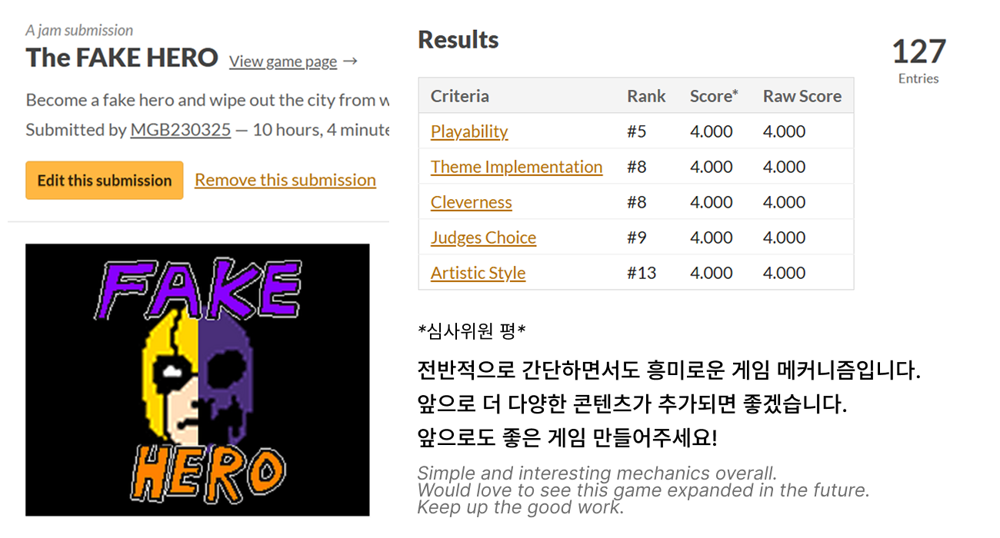
전 항목(Playability, Theme, Cleverness, Judges Choice, Artistic Style) 5점 만점에 4점을 기록했습니다.
주최 측으로부터 메커닉의 참신함과 아트의 완성도를 인정받았습니다.
결과 발표 후 팀원들을 모아 개발 과정을 복기했습니다.
튜토리얼 부재, 방어적 스코프 설정 등 다음 프로젝트에 적용할 개선점을 도출하고 기록으로 남겼습니다.
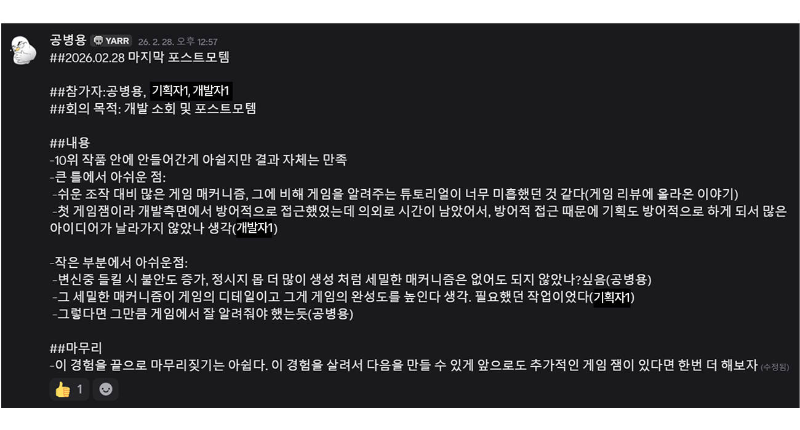
시민의 시선에 따라 자동으로 전환되는 히어로/빌런 폼, 불안도 관리와 점수 사이의 줄타기, 시간대별로 등장하는 특수 유닛의 압박을 확인하실 수 있습니다.